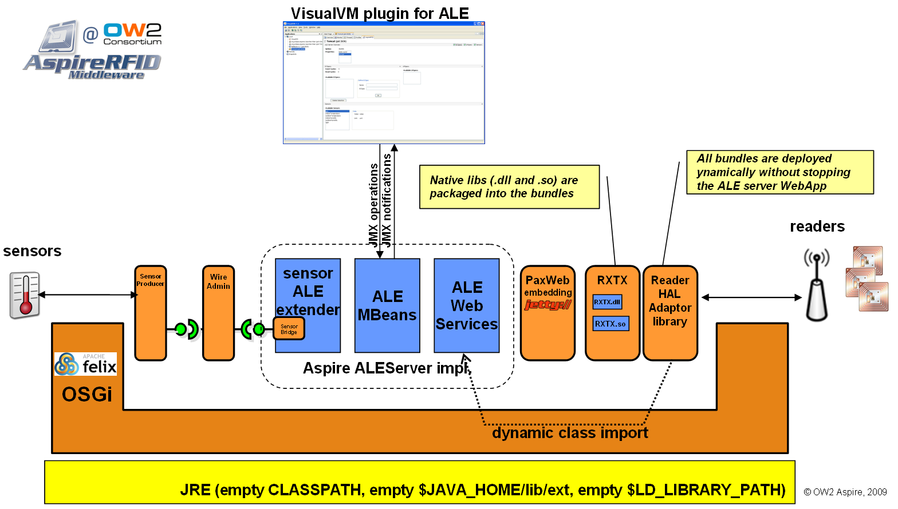
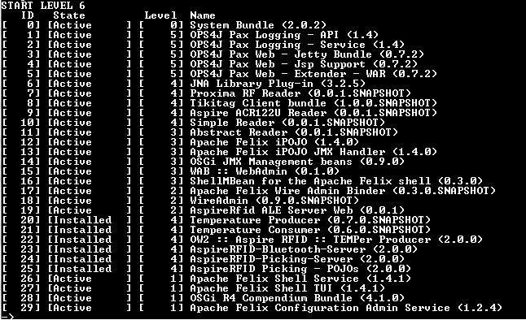

Aspire :: Deployment of Filtering And Collection Server on OSGi
1 Introduction
Deployment of the Filtering And Collection Server on OSGi platform provides to the middleware two important properties:
- Modularity: Extensions to the F&C server as addition of new readers or sensors should be provided in a modular fashion. Using OSGi approach, new readers are developed without introduce their driver code in the same archive (war) used to package the ALE Server.
- Dynamicity: These new modules will be deployed (or undeployed) on the platform dynamically without stopping the applications that are currently in execution.
However, deployment on OSGi imposes some conditions on the F&C server provisioning. This document will explain how to deploy the Fosstrak ALE Server on OSGi platform. The document is organized as follows: first installation of OSGi platform is presented. Then, how the war archive is transformed in a compliant OSGi bundled is showed. Next, the installation of a reader driver is illustrated, follow by installation of a sensor driver. Finally, additional features installation is explained.

Figure : architecture of the ALEServer' OSGi profile (
HiRes picture)
2 Transformation of ALE Server web application in an OSGi compliant bundle
This transformation consists only in the addition of a MANIFEST.MF file into the war archive. This manifest file must be OSGi compliant, indicating the bundle dependencies and capabilities and also other meta-data used by the OSGi platform. In OSGi profile, we have added the manifest file, also Sensor communication and JMX management features. In the project
aleserver-bundle the specific files to support these features are found.
Instructions to build the F&C server are
here
3 Deployment of F&C Server on OSGI platform
3.1 Installation of an OSGi platform with web application support
First download an OSGi distribution such as
Apache Felix (current version is 2.0.1). Then, install
Pax Web (implementation of OSGi Http Service) and their dependencies (current version is 0.7.2). Finally, install the
Pax Web Extender (current version is 0.7.2) with provides a transparent (for JEE war archive) registration of servlets on the OSGi platform.
These steps can be performed easily using the
Pax Runner tool (an intenet connection is required). Simply, download the Pax Runner, then in a console execute the command
pax-run --platform=felix --dir=ale war config
This command install (and launch) the Felix platform into the directory
ale. The last arguments indicate to Pax Runner which
profiles it should install, war is the web support profile and config the configuration admin service.
In some windows system the command must be typed as
pax-run "--platform=felix" "--dir=ale" war config
3.2 Other necessary bundles
In order to support sensor extensions is necessary also to install the
Wire Admin bundle (compiled version
wireadmin.jar ) and
Wire Admin Binder (compiled version
wireadmin-binder.jar) bundles.
Install the bundles using the associated command in your OSGi distribution. For Felix distribution use the next commands
install file:path/wireadmin.jar
install file:path/wireadmin-binder.jar
3.3 Instalation of F&C server bundle
In Felix platform you can install the server bundle using the next command
install file:path/aleserver-bundle.war
4 Installation of Readers' Drivers
Readers' Drivers are installed as bundles on the OSGi platform. Next readers' drivers have been included in the OSGi profile:
Use the Felix command
install to deploy each reader bundle and its dependencies.
5 Installation of the temperature sensors
Two temperature sensors are provided in this distribution, At first,a fictive sensor that can be used for test purposes, and a Temper sensor that is the driver of an usb sensor temperature device. Require bundles are also provided (iPojo version 1.4.0).
Readers' bundles and sensors' bundles are shown in the next osgi console snapshot:

6 Installation of other features bundles
The platform can be enriched using other bundles to add different features. By example, a bundle allowing administration of OSGi platform using the
Visual VM OSGi plugin is provided.
7 All-in-one distribution
A distribution with all required bundles is available
here. Download the file and unzip it, then execute run.sh (or run.bat in Windows).
8 Misc
- CiliaALE : a flexible and dynamically reconfigurable ALE Server for Android platforms (phones and tablets)
 PDF
PDF History
History


{kind=link}
{kind=link}